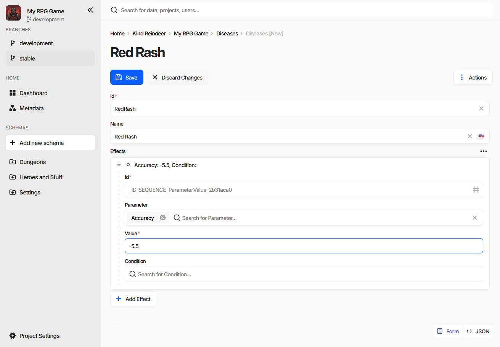
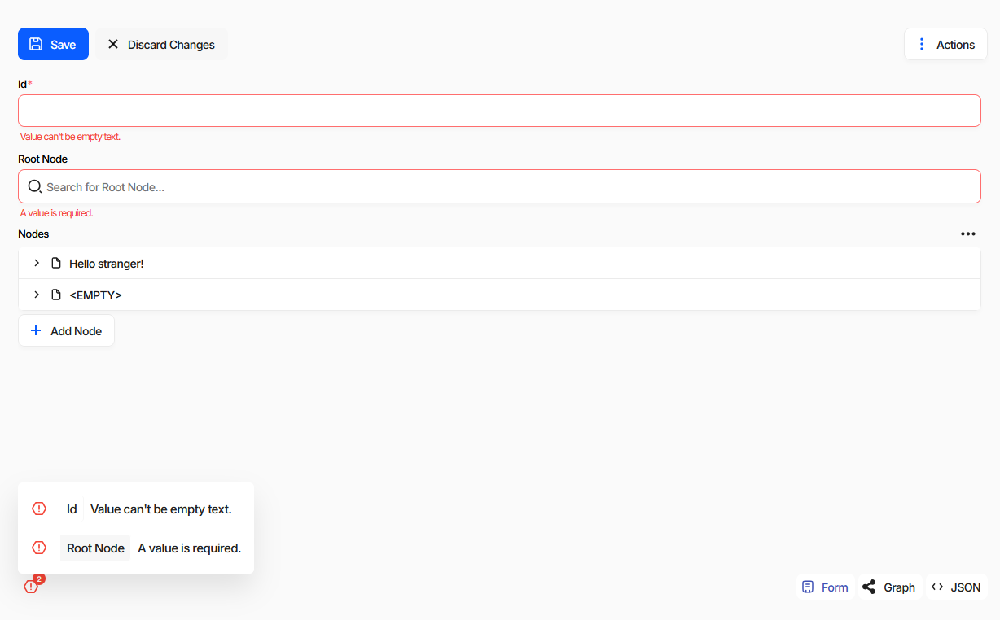
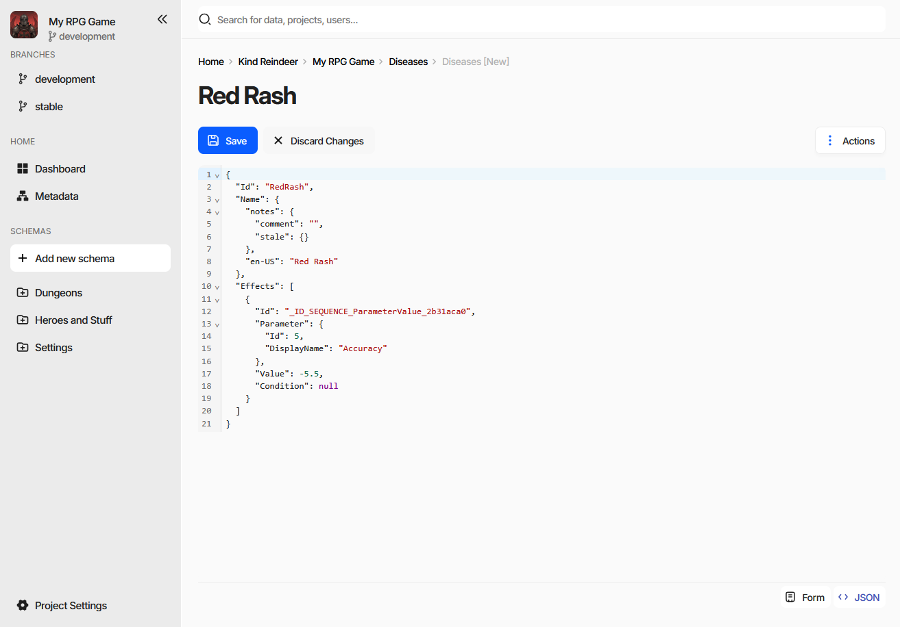
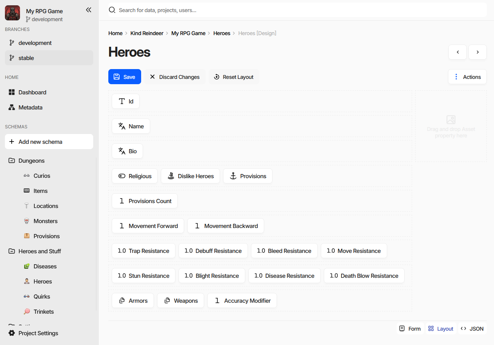
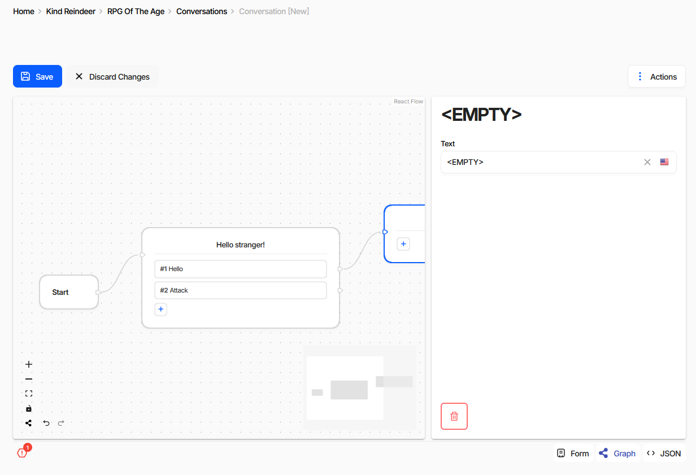

Editing a Document
The document form is the full editor for a single document. The grid on the collection page is faster for short values, but everything that does not fit a table cell - embedded collections, localized text, long descriptions - is edited here.
Opening the Form
From the collection page: Create for a new document, Edit for the
selected one, or Ctrl + click on a row. Elsewhere in the editor, Ctrl + click on any reference
value opens the form of the referenced document.

The heading is the document’s rendered display text, not its Id,
so it changes as you type. Save and Discard Changes sit above the fields, Actions on the right,
and the view mode switch in the bottom right corner.
Moving Between Documents
The ‹ and › buttons next to the heading open the previous and the next document without going back
to the collection - Alt/⌘+← and Alt/⌘+→ do the same. They follow the order of the list the
form was opened from, filters and sorting included, so reviewing a filtered set is a matter of pressing one
key repeatedly.
They are disabled on the first and the last document, and when the form was reached in a way that has no position in a list - by following a reference, for instance.
Fields
Each field is the editor of the property’s data type - a text box, a number field, a date picker, a reference search box, and so on. A red asterisk after the label marks a required property.
Localized text carries a flag button that switches the language being edited. See Internationalization.
References are search boxes; typing filters candidate documents by their display text.
Embedded documents and collections appear as expansion panels with an
Addbutton below them, so a whole subtree is edited in place without leaving the document.
Reordering and Reusing Embedded Documents
The panels of an embedded collection can be dragged by their header:
within the same collection - the entries swap places, which is how the order of a collection is changed;
into another collection of the same schema - anywhere on the form - the entry moves out of the first one and into the second;
holding Ctrl - the entry is copied instead of moved. The copy is a clone with its identifiers cleared, so it becomes a new document rather than a second appearance of the same one.
Only collections of the same schema accept each other’s entries, and nothing can be dragged while the form is read-only. This works on the collection fields of a form; the grid on the collection page is not a drop target.
Saving
Save writes the document and makes it visible to everyone else; Discard Changes reverts it to the
last saved state. Both appear only when something has changed.
Action |
Shortcut |
|---|---|
Save |
Ctrl/⌘+S |
Save and return to the collection |
Ctrl/⌘ + click on |
Save ignoring validation errors |
Shift + click on |
Undo / Redo |
Ctrl/⌘+Z / Ctrl/⌘+Y |
Note
There is no three-way merge. If two people save the same document, the last save wins. In practice collisions are rarer than that sounds, because only the fields you actually changed are written - two people working on different properties of the same document do not overwrite each other.
Validation Errors
Fields that fail validation are outlined in red with the reason under them, and a counter appears in the bottom left corner. Clicking it lists every problem in the document with the field it belongs to.

Save still works. When the document has errors the button becomes Save Anyway and carries a badge
with their number.
Note
Broken data is allowed while you work on it. Empty required fields, references to documents that do not exist yet, formulas that do not parse - none of it blocks a save, here or in the CLI. Half-finished data is a normal state during development.
The tolerance ends at publication: generated code and the game-side loaders assume the data satisfies the schema. See Validation and the review step of the Publication wizard.
View Modes
The switch in the bottom right corner changes how the document is presented. The same modes are listed under
Actions → View Mode. Two of the four are conditional - they appear only where they mean something.
Mode |
Available |
|---|---|
Form |
Always. |
JSON |
Always. |
Layout |
Only when the document being edited is a schema. |
Graph |
Only when an extension provides a custom editor for the schema. |
JSON
The document as it is actually stored, in an editor with syntax highlighting and folding.

It is editable: changes made here go through the same save as the form. When the game data is read-only the JSON is shown as plain text instead. Useful for pasting a document in whole, for checking what a localized text or a reference really holds, and for reading the structure that import and export expect.
Layout
Layout mode is not a way to view data - it edits the schema, deciding how that schema’s properties are
arranged on the document form. It is therefore offered only while editing a schema, which the breadcrumb
marks as [Design].

Each property is a chip. Drag chips to reorder them and to group several onto one row. The area on the right
takes an Asset property, which is then displayed beside the form instead of in it. Reset Layout
returns the schema to the default one-property-per-row arrangement.
Every document of that schema uses the layout from then on, so it is worth arranging the schemas your team fills most often - related fields side by side beat scrolling through forty rows.
Graph
Graph mode belongs to extensions. When an extension registers a custom editor for a schema, that editor is shown here; without one the mode does not appear at all. Writing one is Implementing a Schema Editor.

The screenshot is a conversation editor extension: dialogue nodes on a canvas, links between them as edges, and the selected node’s fields in the panel on the right. It edits the same document as the form - the nodes are the entries of an embedded document collection - so the two modes can be switched between freely, and the error counter keeps working in both.
When the Form Is Read-Only
The editing buttons are hidden and a banner explains why. There are three of them:
the game data is read-only - insufficient permissions, a subscription plan limit, or a data source that is read-only to begin with;
you do not have permission to edit this document, see Roles and Permissions;
the document is protected from modifications and cannot be edited at all.